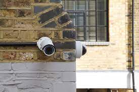

Solar/Inverter Installation:
In the realm of solar and inverter installations, my expertise has shone through various projects.
One notable achievement includes the successful implementation of a residential solar power system for a estate.
This project involved meticulous planning and the utilization of cutting-edge
solar panels coupled with advanced inverters to optimize energy conversion.
The result was a sustainable and efficient solar energy solution tailored to meet
the unique needs of the client.
CCTV Camera Installation:
In the field of CCTV camera installations, I take pride in the completion of a commercial security project
for a hotel Corporation.
This endeavour encompassed the deployment of a comprehensive CCTV
network across their premises.
High-definition cameras with advanced analytics were strategically
placed to enhance surveillance capabilities.
The integration of remote monitoring and
smart technology allowed for real-time security management, ensuring a robust and proactive
approach to safeguarding the client's assets.

Electric Fence Installation:
As an electric fence installer, a noteworthy accomplishment lies in securing the perimeter of the Estate.
The implementation involved the installation of a state-of-the-art electric fence system that seamlessly
integrates with the estate's security infrastructure.
The project showcased my proficiency in deploying modern security solutions, incorporating technologies
that provide both deterrence and immediate response capabilities.
The result was an enhanced level of safety and peace of mind for the residents of the Estate.
A forward-looking goal in the solar/inverter power sector involves spearheading the development of sustainable community microgrids.
By integrating solar panels, energy storage systems, and advanced inverters, these microgrids aim to provide local communities with a reliable and
independent source of clean energy. The goal is to create resilient energy infrastructure, reducing dependence on traditional power grids and promoting
environmentally conscious energy consumption.
The overarching goal is to establish a streamlined process for importing high-quality solar power materials, ensuring their availability for installations.
The focus lies in catering to those seeking solar solutions, providing a sustainable and cost-effective approach.
Our strategy involves offering flexible installment plans, allowing beneficiaries to spread the financial commitment over manageable monthly/weekly payments.
This not only facilitates wider accessibility to solar installations but also aligns with the diverse energy needs of our clientele.
By harmonizing the importation, installation, and payment structures, our initiative aspires to contribute significantly to the
widespread adoption of solar power technology, fostering energy sustainability and accessibility for communities in need.